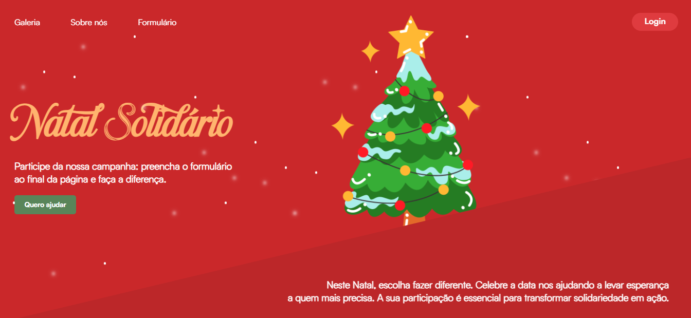
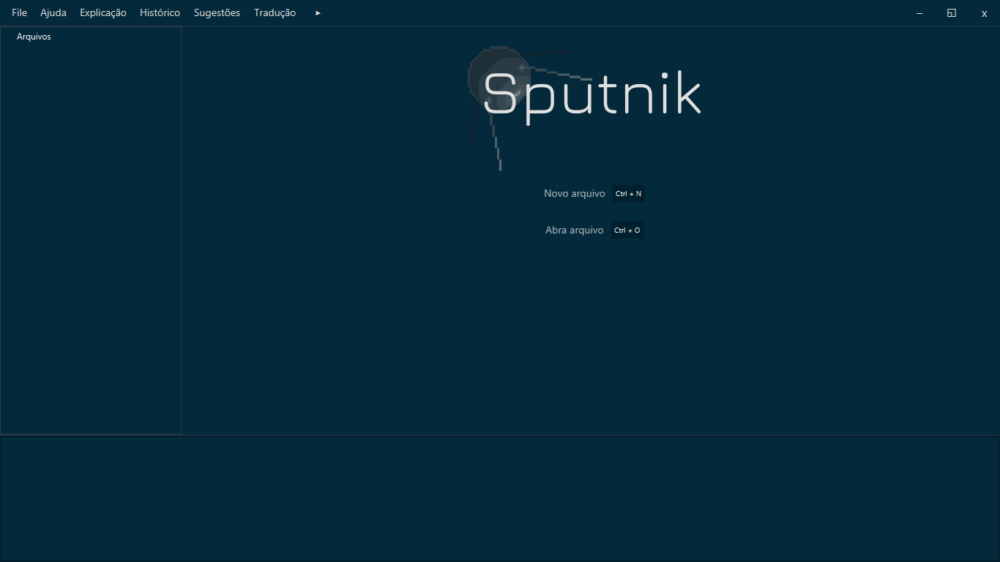
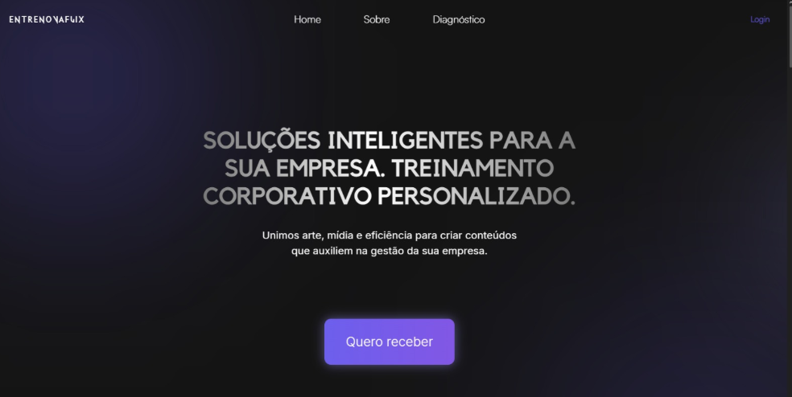

Projetos
PROJETO INDEPENDENTE
Natal Solidário
Site feito para divulgar a campanha Natal Solidário, responsável por arrecadar doações financeiras e materiais para pessoas em situação de vulnerabilidade. Também conta com um painel de controle para o instituto responsável acompanhar dados e estatísticas da campanha.
Abrir no Github

PROJETO ACADÊMICO
Sputnik IDE
IDE (Ambiente de desenvolvimento integrado) feita para auxiliar engenheiros de software no desenvolvimento de código, integrada a uma inteligência artificial que permite a tradução do código e algumas outras funcionalidades que facilitam o trabalho do desenvolvedor.
Abrir no github

PROJETO ACADÊMICO
EntrenovaFlix
Plataforma de diagnóstico empresarial e treinamento coorporativo personalizado com níveis de acesso diferentes: Uma área para funcionários acessarem conteúdos de treinamento conforme suas necessidades e um dashboard para o gerente de RH acompanhar os resultados dos seus subordinados.
Abrir no github
